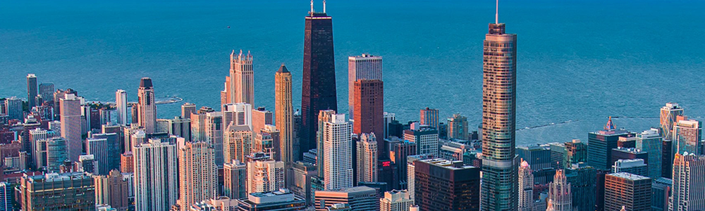
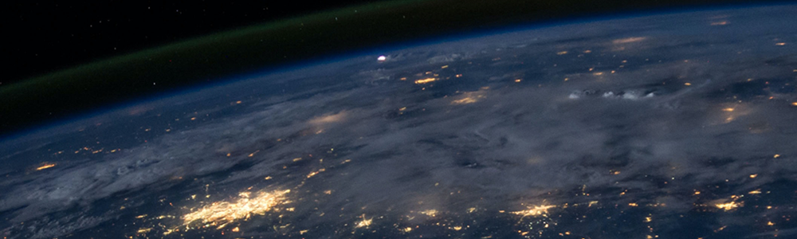

연혁
2022 - 2010
- 2020
-
02
솔머티리얼즈 사명 변경
- 2019
-
03
익산부지 확보
-
02
전주 과산화수소 공장 증설
- 2018
-
11
이차전지 바인더 장영실상 수상
-
07
울산 과산화수소 농축공장 증설
- 2017
-
10
테이팩스 코스피 상장
- 2016
-
09
전주 과산화수소 농축공장 증설
-
05
테이팩스, 솔머티리얼즈 인수
- 2015
-
10
이차전지 음극바인더 상업화
-
04
세계최초 고색재현 친환경 양자점 양산기술개발 한국공학기술 한림원 등재
- 2014
-
05
한솔전자재료(서안)유한공사 과산화수소 공장 준공식
-
01
대만 연락 사무소 설립(박막재료)
- 2013
-
10
전자재료 연구/생산동 준공
- 2012
-
11
한솔전자재료(서안)유한공사 법인 설립
-
08
OLED용 방습제 제품승인 및 공급
- 2011
-
04
회사 신용등급 상향(BBB+ → A-)
-
05
테이팩스, 솔머티리얼즈 인수
2009~2000
- 2009
-
08
전주공장 박막재료 R&D 센터 준공
- 2008
-
12
기업신용등급 상향(BBB0 → BBB+)
- 2006
-
12
윤리경영 도입 선언
- 2004
-
03
(주)한솔케미칼로 사명 변경
- 2003
-
03
지식경영 도입 선포식
- 2000
-
01
한솔케미언스(주)로 사명 변경
1999~1990
- 1997
-
10
ISO 14001(환경경영시스템) 획득
-
06
전주 과산화수소 공장 준공
- 1996
-
07
ISO 9001(품질경영시스템) 획득
- 1995
-
12
영우화학, 한솔화학 통합(1995.11.03) 후 한솔화학(주)로 사명 변경
-
11
라텍스 공장 준공
-
07
포르말린 공장 준공
- 1994
-
05
한솔화학, 영우화학 주식 양수
- 1993
-
10
E-PAM(에멀젼 고분자응집제) 공장 준공
- 1992
-
05
한솔화학 설립
- 1991
-
07
반도체용 반정제 과산화수소 공장 준공
1989~1980
- 1989
-
10
합작회사 삼영순화(주) 설립
-
05
한국증권거래소에 주식상장
- 1986
-
11
차아황산소다(SD) 공장 준공
-
04
과산화벤조일(BPO) 공장 준공
- 1985
-
12
영우화학(주)로 사명 변경
- 1980
-
03
한국퍼록사이드(주) 법인 설립 - 울산공장 과산화수소 생산